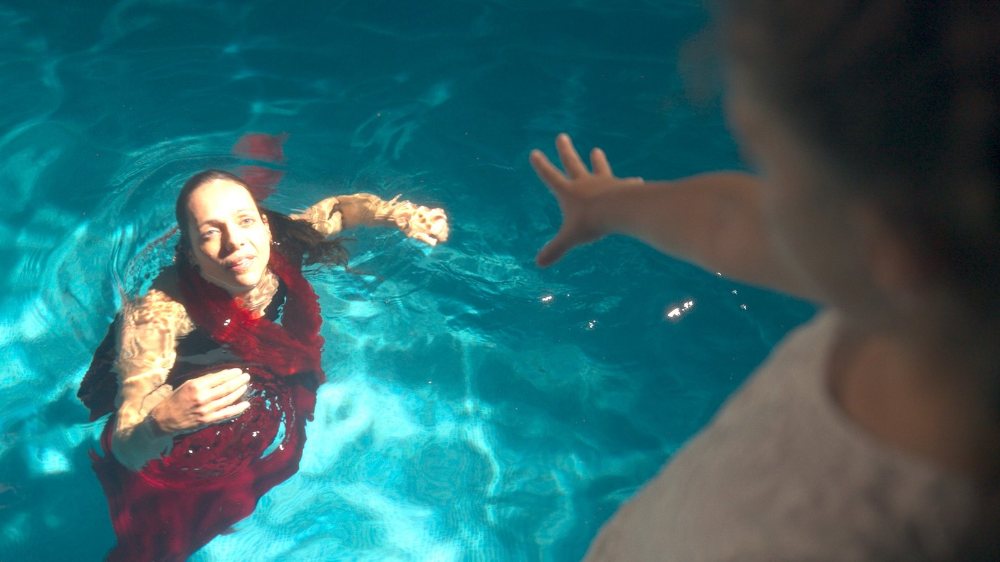
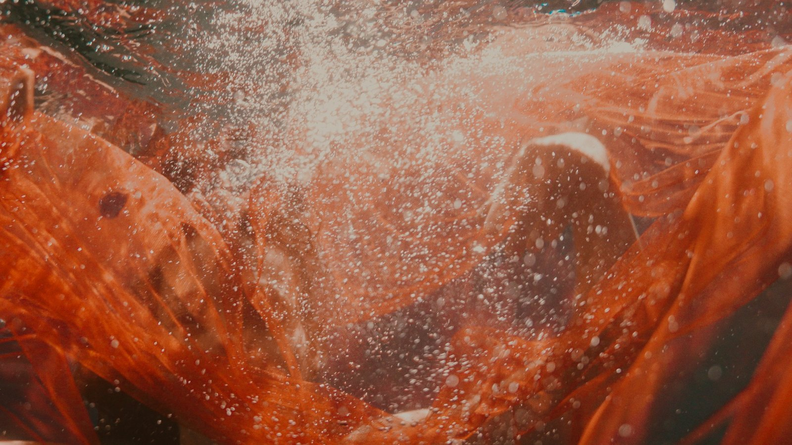
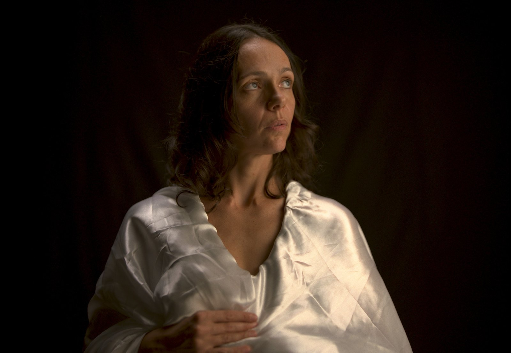
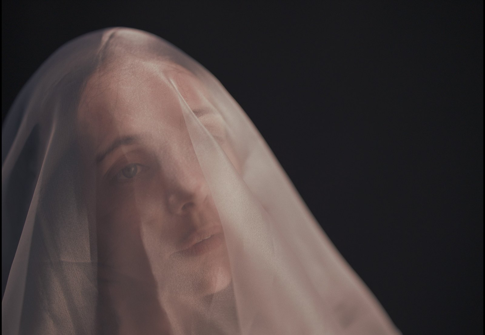
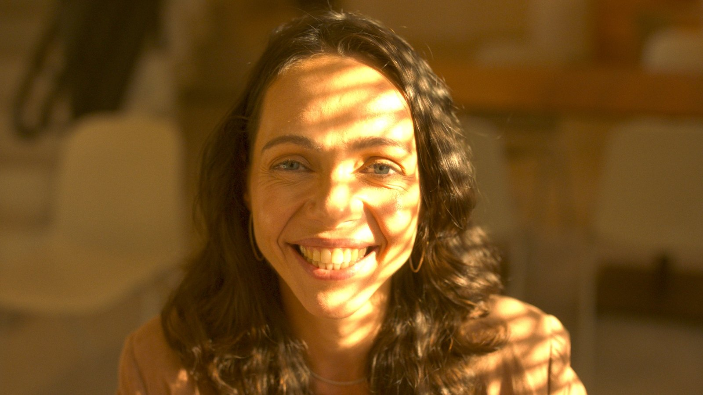
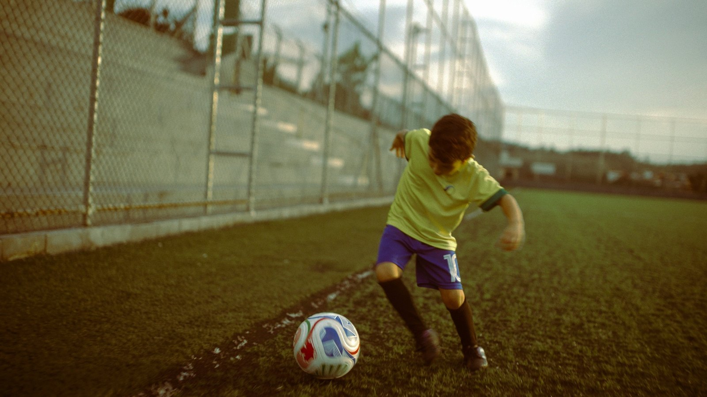
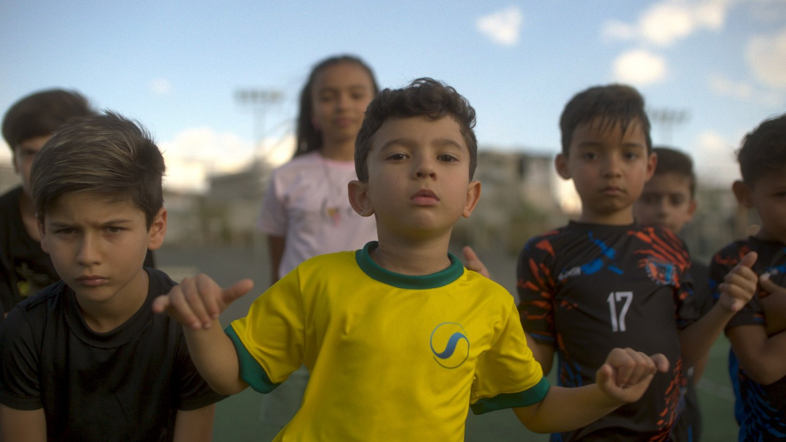
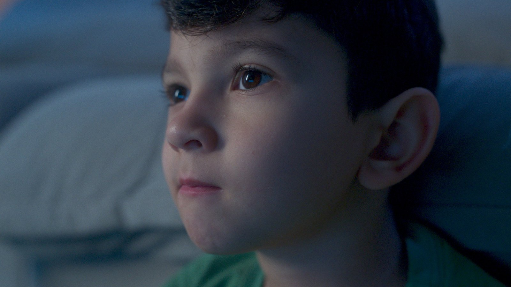

Versão interna · Agência · California Series Vol 1
Mendescolor
California Series · Vol. 1 · by Douglas Mendes · Do log ao look em um node.
Blackmagic Pocket 6K Pro, BRAW Gen5. Esquerda: o arquivo como sai da câmera. Direita: o grade final, feito com o Mendescolor.


Frame RED em log e o pipeline completo rodando na GPU do seu navegador: grade, looks, os 13 filmes, halation, glow, grain, vignette, as LUT looks e o monitor. Mesmos números do DCTL, validados pixel a pixel. Arraste na imagem para mover o wipe. Abrir em tela cheia ↗


Bateria de agosto/2026 com material real de doc: ALEXA Mini LF (LogC3) e Sony FX3 (S-Log3), dezessete cenas com luzes diferentes, tudo gradeado no plugin v1.4 (conversão + look + filme + grain + halation + glow + vinheta no mesmo node). Clique em um frame para ampliar e arraste para comparar com o log.








Este é o Vol. 1 da California Series do Mendescolor. O Vol. 2 já está em produção: o que vocês apontarem aqui entra na fila primeiro.